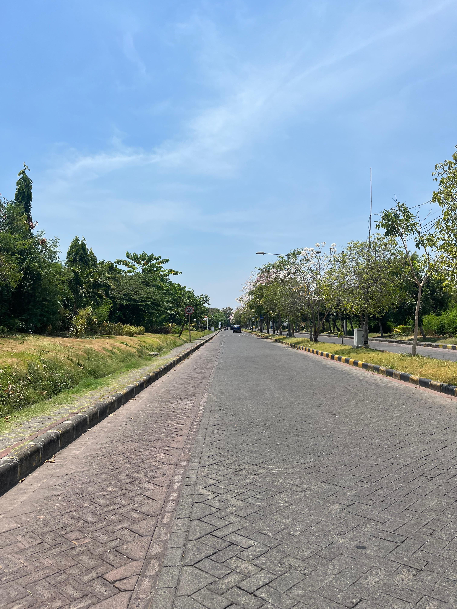

Riyan Fadli - 5025241068
Raditya Zhafran - 5025241120
Foto Referensi

Simulasi WebGL
Geser untuk orbit · Scroll / cubit untuk zoom
Kontrol scene
Senja
Memuat WebGL…
Video Referensi
Desain Tree Hubungan Antarobjek
Objek disusun dalam hubungan parent dan child. Transformasi pada parent diterapkan juga ke child, sehingga bagian-bagian objek tetap menyatu saat dipindah, diputar, atau diubah ukurannya.
Scene ITS ├── Lingkungan: tanah, jalan, trotoar ├── Pohon tabebuya: batang, cabang, daun, bunga ├── Perumahan dosen │ ├── Rumah: pondasi, dinding, atap, teras, pintu, jendela │ └── Akses gate │ ├── Saluran air, jembatan, jalan perumahan, pagar, pos │ └── Gerbang utama → engsel → bingkai dan jeruji ├── Lampu jalan: pondasi, tiang, lengan, LED └── Mobil: bodi, kabin, kaca, lampu, poros roda → ban dan velg
Contohnya, atap dan jendela mengikuti transformasi rumah. Gerbang berputar pada node engsel, sedangkan ban dan velg mengikuti poros roda serta perpindahan mobil.